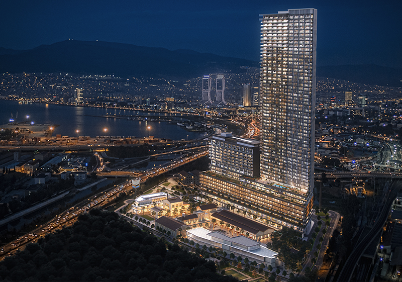

Education
Post-Graduate, BIM – Lifecycle Management, Algonquin College, Canada 2020
Bachelor of Science, Civil Engineering, Manisa Celal Bayar University, Turkey 2008
(Equivalent to a Bachelor's degree (four years), as determined by World Education Services in Toronto, ON)
Professional Experience
Road design engineer, 2015-2019Izmir Metropolitan Municipality, Turkey
Designed and coordinated municipal roads (width: 17.00mt or over) and parking area projects including the engineering structures and the municipal infrastructure systems, from conceptual to final design.
Managed the two most populous municipal districts (appr. 825 000 ppl).
Performed site visits for existing condition surveys, traffic counts and construction phasing.
Generated traffic simulations for crucial projects and presented them.
Coordinated and prioritized multiple projects and prepared monthly reports.
Responded to inquiries and requests from the public and took the necessary actions.

Head of Technical Office, 2015 (June – November)
Mahall Bomonti Project, Turkerler Holding, Turkey
The project is a high-rise residential complex on a 45 000 m2 area. The total construction area is 275 000 m2 (New construction area : 261 354 m2, below grade area : 107 142 m2). It contains 12 buildings, including new construction of a 250 mt high skyscraper and restoration of 9 historical buildings.
The project budget : approx. $350M; Project delivery method : Design – Build (DB).
Prepared cost estimation and budget reports, master schedule and construction phases’ plans.
Coordinated the consultants and project meetings, design reviews and tracked all the changes and ROIs and made the modifications on the cost/budget reports, project schedule and WBS.
Performed quantity take-off studies and adjust and update according to the changes.
Controlled and coordinated subtrades’ bid packages and prepared the awarded subcontractors’ contracts, reviewed their schedules and provided necessary inputs.
An international fair site project that was funded by the metropolitan municipality sits on 330 000 m2 with a total construction area of 240 000 m2. It contains 7 buildings, including a 48 meters tall sightseeing tower, underground parking garage and an outdoor exhibition area with an amphitheatre and lotus pond. In this project for the first 6 months, I worked as a site superintendent and got promoted gradually to this position.
The project budget : $145M; Project delivery method : Public Private Partnership (P3).
Formulated/maintained optimized project schedule(CPM) and cost-budget reports(EVA).
Prepared/controlled the quantity estimations, cost – budget – schedule planning, and trade-off studies.
Estimated the monthly progress payments for the firm(general contractor) and the subcontractors.
Visited the site and monitored the schedule progress analysis to identify and inform related departments.
Presented the reports to project manager, construction manager, consultants and stakeholders.
Manage and supervise subcontractors responsible for foundation and superstructure construction.
Ensure that the site work carried out according to the plans, specifications, and schedule.
A residential complex project sits on 45 322 m2. The total construction area is 109 541,83 m2. It contains 11 buildings, including 6-storey 3 blocks, 22-storey 4 blocks, 25-storey 4 blocks, indoor and outdoor swimming pools, underground parking garage.
The project budget : $300M; Project delivery method : Design – Bid – Build (DBB).
Planned the application sequence for the reinforcement of the soil and supervised two different subcontractors and reported the progress for the monthly progress payment reports.
Supervised, planned and coordinated the constructions of the foundations, superstructures (incl. cast-in-place concrete and steel constructions) and finishing works.
Prepared estimations to track the material usage.
Ensured that the site work carried out according to the plans, specifications and abided by the construction schedule.
Junior Real Estate Appraiser, 2009-2010
Arkat Gayrimenkul Degerleme A.Ş, Turkey
Arranged and attended meetings with the owners and government administrations.
Kept meeting minutes.
Prepared written reports.
Intership Experience
Site Internship, M4 Kadıkoy-Kartal Subway Construction Site, 2007 (June-August)
Anadoluray Joint Venture, Istanbul Turkey
The project has an approximate length of 22.7 km and a total of 16 stations.
Worked with a site superintendent who was supervising three shafts.
Observed different tunnelling methods.
Experienced construction site working environment.
Office Internship, Yuksel Project, Ankara Turkey 2006 (June-August)
Conducted soil experiments at the company's geology lab.
Assisted design teams and experienced civil construction design workflow.
Volunteering Experience
2019 RPIC Real Property National Workshop, Ottawa
Community Projects in Algonquin College; Campus Village, AC Re-Start Day, Stars in Jars, Charles H. Hulse Public School
A third-party observer at the Governmental and Presidential elections, Turkey 2018-2019.
23rd Universiade İzmir, Turkey August 2005
Various positions such as race secretary, service area secretary, flag marshal, stage marshal etc. in legs of World Rally Championship, European Rally Championship, Turkish Rally Championship, Turkish Track Championship and Turkish Drag Championship, Turkey 2004-2008
Participation
Prosteel Steel Structure Design Competition, 2008
Attended as a team consists of 7 members (4 civil engineering students and 3 architecture students).
Working as a team player.
Experienced to design, plan and abide by a timeline.
Certifications & Awards
Synchro Pro Advanced V2019 Apr 2020
Student Leadership 3.0 Certificate Apr 2020
Synchro Pro Fundamentals V2019 Mar 2020
Student Leadership 2.0 Certificate Jan 2020
IELTS Academic (Overall result 7.5) Feb 2019
Student Leadership 1.0 Certificate Dec 2019
2nd Place in Fun Category Dragon Boat Race İzmir May 2018
Measurement and Preparations of Tender Documents Aug 2009
Chamber of Civil Engineers Membership, Turkey Oct 2008
Demonstraded Skills
Limited French & Spanish
Strong analytical thinking and problem solving
Work cooperatively and productively in a team environment as well as individually
Handle hard physical conditions
Proven ability to read blueprints and drawings
Self-defence sports and running, tango dancer, guitar and piano player